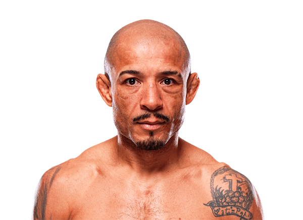

Jose Aldo es uno de los mejores peleadores en la historia de la división peso pluma de las artes marciales mixtas. Nació el 9 de septiembre de 1986 en Manaus, Brasil.
Aldo comenzó a entrenar artes marciales desde muy joven y rápidamente desarrolló un estilo basado en velocidad, potencia y técnica. Su striking, especialmente sus patadas bajas, se volvieron famosas por el daño que causaban a sus oponentes.

Durante su carrera se convirtió en campeón de peso pluma y dominó la división durante muchos años, defendiendo su título contra algunos de los mejores peleadores del mundo.
Además de su striking explosivo, Aldo también posee una excelente defensa de derribos y habilidades defensivas que lo convirtieron en uno de los campeones más dominantes de su categoría.
Peso pluma (145 lb / 66 kg)
Más de 30 peleas profesionales y múltiples defensas del campeonato mundial.